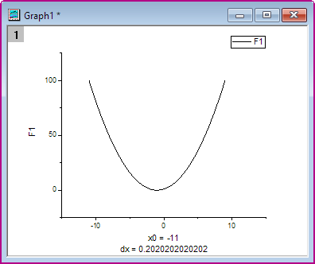
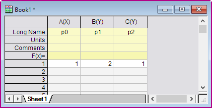
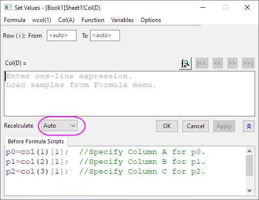
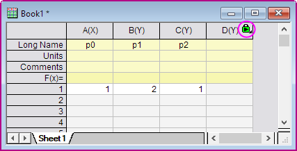
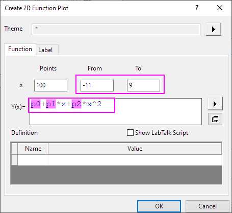
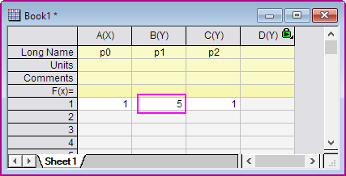
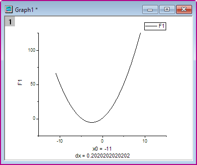

Funktionen mit in einem Arbeitsblatt definierten Parametern zeichnen
PlotFunc-Parameter-in-Wks
Zusammenfassung
Origin kann Funktionen zeichnen. Es kann ebenfalls Funktionen zeichnen, deren Parameter in einem Arbeitsblatt definiert sind. Das Funktionsdiagramm kann automatisch aktualisiert werden, wenn sich die Parameter im Arbeitsblatt ändern.
- 
Was Sie lernen werden
Dieses Tutorial zeigt Ihnen, wie Sie:
- Variablen aus einem Arbeitsblatt im Dialogfeld Werte setzen definieren.
- Ein Funktionsdiagramm mit Parametern zeichnen.
- Ein Diagramm automatisch aktualisieren, wenn sich die Parameter ändern.
Schritte
Verwenden Sie die folgende Funktion als ein Beispiel: y=p0+p1*x+p2*x^2
- Erstellen Sie ein Arbeitsblatt mit den drei Parametern p0, p1, p2, die in Spalte A, Spalte B, Spalte C gespeichert sind, wie unten zu sehen.
- 
- Klicken Sie auf die Schaltfläche Neue Spalte hinzufügen
 auf der Symbolleiste Standard, um eine neue Spalte zu dem Arbeitsblatt hinzuzufügen.
auf der Symbolleiste Standard, um eine neue Spalte zu dem Arbeitsblatt hinzuzufügen.
- Markieren Sie Spalte D und wählen Sie Spalte: Spaltenwerte errechnen. Wählen Sie Auto in der Auswahlliste Neu berechnen. Geben Sie das unten angezeigte Skript ein, um Parameter im Bearbeitungsfeld Skript vor Anwenden der Formel zu definieren. Klicken Sie auf OK, um das Dialogfeld zu schließen.
- 
- Beachten Sie, dass in der oberen rechten Ecke von Spalte D das Symbol eines grünen Schlosses
 angezeigt wird, das auf den Neuberechnungsmodus Auto hinweist.
angezeigt wird, das auf den Neuberechnungsmodus Auto hinweist.
- 
- Wählen Sie Zeichnen > Funktionsdiagramm: Neues 2D-Funktionsdiagramm, um den Dialog 2D-Funktionsdiagramm erstellen zu öffnen.
- Legen Sie in diesem Dialog die Optionen folgendermaßen fest und klicken Sie auf OK, um den Dialog zu schließen.
- 
- Sie erhalten dieses Funktionsdiagramm.
- Das Funktionsdiagramm kann auch automatisch aktualisiert werden, wenn sich die Parameter in der ersten Zeile des Arbeitsblatts ändern. Ändern Sie den Wert in der ersten Zeile der Spalte 2 von 2 in 5. Klicken Sie außerhalb dieser Zelle, um die Bearbeitung zu beenden.
- 
- Das Funktionsdiagramm wird aktualisiert, um diese Änderung wiederzugeben.
- 
Skripte
Das im Bearbeitungsfeld Skript vor Anwenden der Formel des Dialogfelds Werte setzen verwendete Skript lautet:
p0=col(1)[1]; //Specify Column A for p0. p1=col(2)[1]; //Specify Column B for p1. p2=col(3)[1]; //Specify Column C for p2.
Die Funktion im Bearbeitungsfeld F1(x) des Dialogfelds Details Zeichnung ist die folgende:
p0+p1*x+p2*x^2